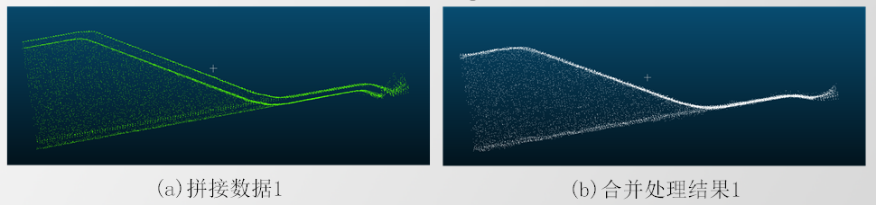
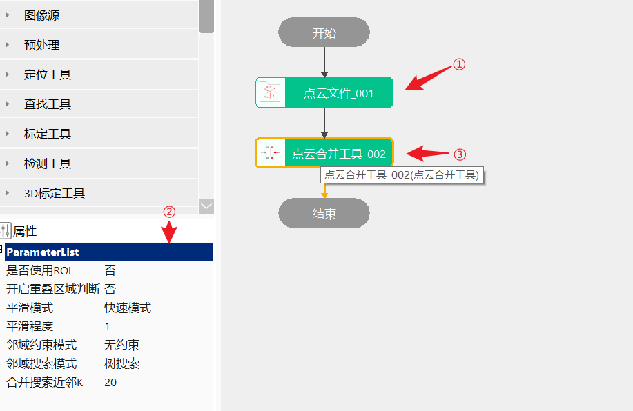

点云合并工具用于将点云中的分层现象进行消除，即对重叠区域的处理。
主要服务于大范围的3D点云测量项目，解决多视角点云数据拼接后存在点分层现象及重叠数据冗余的问题，工具主要应用在三维测量项目的预处理阶段。

无
工具执行流程：加载点云→设置重叠点判别→设置重叠点平滑和重叠点精简合并→执行合并。

| 注意事项 |
|---|
| 1、合并后的效果目前需要借助第三方软件查看 |
| 2、当点云不带法线，合并工具执行会报错 |
| 参数名称 | 参数说明 |
|---|---|
| 是否使用ROI | 启用则使用长方体进行框选点云 |
| ROI数量 | ROI的个数，范围：[1,50] |
| ROI索引 | 当前ROI |
| 开启重叠区域判断 | 是否开启重叠区域判断 |
| 重叠区域判断模式 | 分为邻域点数和点距法线 |
| 距离阈值 | 指定各查询点与最近邻点的距离阈值；若查询点与最近邻点的距离小于距离阈值且两点法线夹角小于法线夹角阈值，则判定这两个点为重叠点；否则为非重叠点 |
| 距离阈值-相对 | 设置为相对阈值，此时距离阈值为设置值与点云分辨率的乘积 |
| 法线夹角阈值 | 指定各查询点最近邻点的法线与查询点法线的夹角阈值；若查询点与最近邻点的法线夹角小于法线夹角阈值且两点距离小于距离阈值，则判定这两个点为重叠点；否则为非重叠点 |
| 邻域点数阈值 | 指定各查询点邻域内的点数阈值，若查询点邻域点数大于阈值，则判定该点为重叠点；否则为非重叠点，可选自动设置阈值 |
| 邻域点数阈值-自动 | 自动设置阈值 |
| 邻域搜索半径 | 指定各查询点邻域搜索半径，即统计邻域点数的邻域范围 |
| 邻域搜索半径-相对 | 邻域搜索半径-相对 |
| 相对距离阈值 | 取值范围[0.0001, 1]，默认值为0.05；过滤相似姿态 |
| 平滑模式 | 包含快速模式、高精模式和超高精模式；其中，快速模式为基于双边滤波的点云平滑；高精模式为基于线性插值的点云平滑；超高精模式为基于移动最小二乘的点云平滑 |
| 平滑程度 | 指定平滑的迭代次数 |
| 邻域约束模式 | 包含无约束、弱约束和强约束，其中，无约束为不进行邻域点筛选，所有近邻搜索结果作为目标邻域点；弱约束为筛选出与查询点法线夹角小于90°的邻域点；强约束为筛选出同时满足与查询点法线夹角小于90°及在指定邻域约束半径形成的圆柱邻域范围内的邻域点 |
| 邻域搜索模式 | 包含体素近邻搜索和树搜索，若选择体素近邻搜索，则可以指定体素网格大小；若选择树搜索，无法指定体素网格的大小 |
| 体素-X | 取值范围为[0.001, 1] |
| 体素-Y | 取值范围为[0.001, 1] |
| 体素-Z | 取值范围为[0.001, 1] |
| 合并搜索近邻K | 若邻域搜索模式为树搜索时，此值指定近邻数；若邻域搜索模式为体素近邻搜索时，此值指定搜索最大近邻数 |
| 邻域约束半径 | 用于限制邻域搜索范围，根据此半径生成一定大小的圆柱邻域范围 |
| 邻域约束半径-相对阈值 | 邻域约束半径-相对阈值 |
| 开启并行运算 | 是否开启并行运算，选择是时，算法将开启OpenMp并行计算方式，可以提升计算速度，但可能出现耗时不稳定的情况，选择否时，算法将关闭OpenMp并行计算。 |
| 线程数百分比 | 设置并行运算的线程数百分比，有效范围为 (0, 0.75]，对应表示(0%, 75%]百分比范围。 |
| 参数名称 | 参数说明 |
|---|---|
| 输出点云数据 | 模型变换后的点云数据 |
| 执行结果 | 工具执行正确性 |
| 执行时间 | 工具执行所需时间 |
参见“\Samples\3D\点云\点云合并工具.gvp”。